Click on the Sign up free link at the top right of the screen.
Click the Sign up button in the Power BI tile.

Next, enter your work email address. Note that at this moment, public email addresses like Gmail, Hotmail or Yahoo are not accepted.

This lab should take about 30 minutes.
The goal of this lab is to build a complete IoT solution using Azure IoT Hub, Stream Analytics & PowerBI. There’s no need to have a physical device like a Raspberry Pi since you’ll simulate a device by running the device code in a Web app.
There are a fair number of steps to get this lab going (but a lot of it is pictures), and in doing so you’ll learn plenty.
An active Azure subscription. If you don’t have an account, you can create a free trial account in just a couple of minutes. For details, see http://azure.microsoft.com/pricing/free-trial/
Visual Studio 2015 Community Edition (or better) is required to edit and deploy the Web application. Go to http://www.visualstudio.com to get this.
The Azure SDK for .NET must be installed. You can use the Web Platform Installer to do this. Download and install the Web Platform installer from https://www.microsoft.com/web/downloads/platform.aspx and locate the latest version of the SDK for your version of Visual Studio.
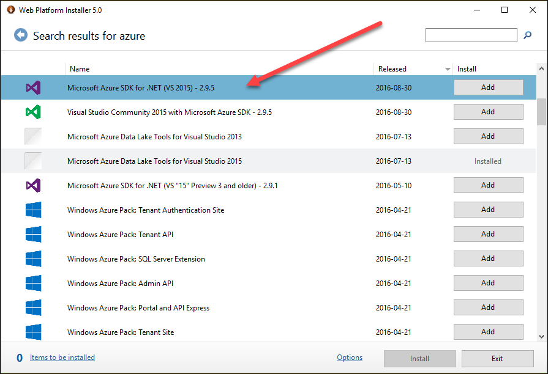
Your session presenter will make these files available for you to download. Unzip the files into an empty directory (e.g. under your Documents folder).
Locate the folder where you unzipped the lab files – make sure to use the unzipped files and don’t just navigate into the zip file.
Locate the folder named Start under WebDevice
Double-click on the WebDevice.sln file, which will launch Visual Studio
In the Solution Explorer (available from the View menu if not showing), right-click on the solution node (the one at the top of the window) and select Restore NuGet Packages. This will download the required packages from NuGet.
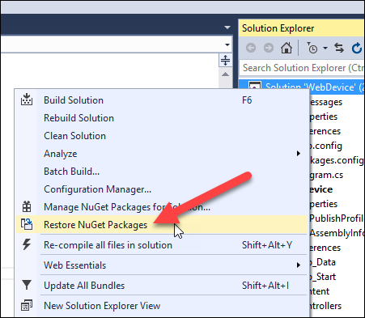
Right-Click on the solution and select Build Solution. Make sure you resolve any errors before starting the deployment process.
A free Power BI account is required to display the live data. Head to www.powerbi.com and create a free account.
Click on the Sign up free link at the top right of the screen.
Click the Sign up button in the Power BI tile.
Next, enter your work email address. Note that at this moment, public email addresses like Gmail, Hotmail or Yahoo are not accepted.
You will create a Web page that will simulate an IoT device that sends messages to IoT Hub. In this section, you will create an IoT Hub.
Log into the Azure portal at http://portal.azure.com
Click on the New button.
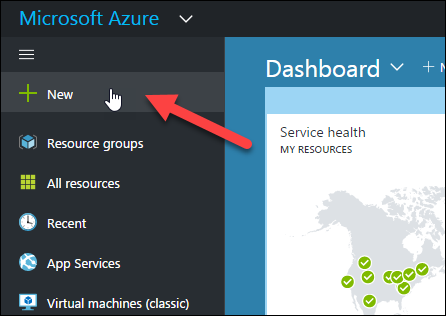
Type iot in the search box and select IoT Hub from the dropdown list.

Next, select IoT Hub in the results tile.
Click the Create button.
Enter a globally unique name for you IoT Hub, select a pricing tier, select your subscription and create a new resource group. Finally, check Pin to Dashboard and click the Create button. This will take a minute or two.

Once completed, you will be presented with the overview tile.

The messages sent to IoT Hub will be read and analysed using Stream Analytics.
Click on the portal hamburger menu, then New, then type “stream analytics” and select Stream Analytics Jobs from the dropdown menu.

Select Stream Analytics Job from the result tile and click the Create button.

Type a job name, select your Azure subscription and select the resource group that you created earlier.

Click the Create button. This will take a few seconds.
Click on the Inputs tile.
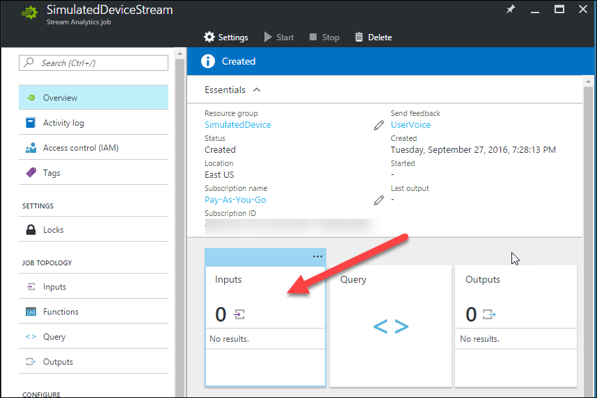
Click Add
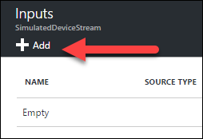
In the New Input tile, type an Input Alias name, select IoT Hub from the Source dropdown list and make sure the IoT Hub you created earlier, is selected. Click Create.
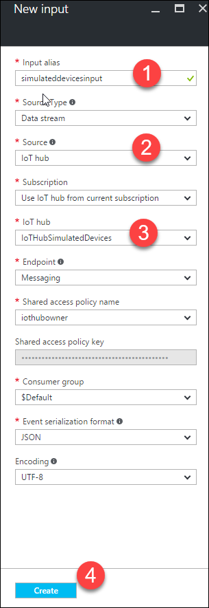
Let’s now create an output. Click the Outputs tile.

Click Add.

From the Sink dropdown and select Power BI. The tile will display new fields automatically depending on the selected sink.
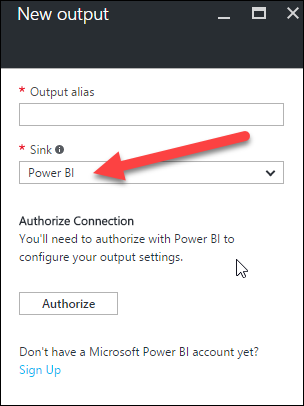
Type a name for your output and the dataset and table names. Click Create.

Next, click on the Query tile.

In the left section of the Query tile you’ll see the input and output you created earlier. The right section shows a skeleton query.
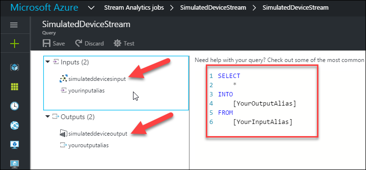
Type or copy/paste the following query and replace the placeholders with the names of your input and output.
You should have some similar then this:
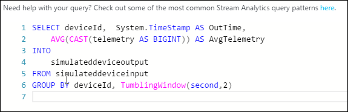
Click on Save.
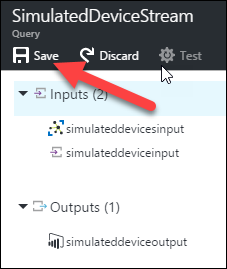
Dismiss the Query tile and click on Start to start the stream analytics job.
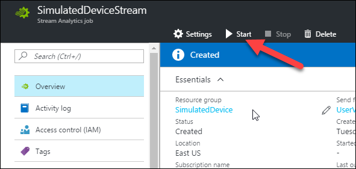
Select Now as the start time. This will take a few minutes.
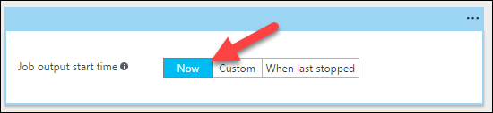
The Stream Analytics job is now set.
Let’s take a look at the Nuget packages used by the WebDevice project. In Solution Explorer, Right-Click on WebDevice and select Manage Nuget Packages… Notice that the project references Microsoft.Azure.Devices, Microsoft.Azure.Devices.Client and Microsoft.Azure.Amqp. These are needed to create new devices in the IoT Hub device registry and to send/receive messages to IoT Hub.
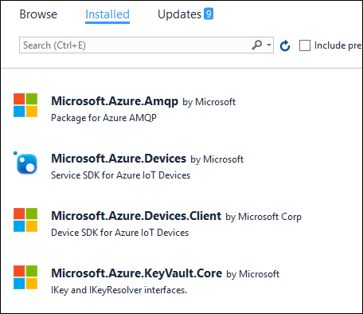
In Visual Studio, locate the WebDevice project and open the HomeController.cs file.
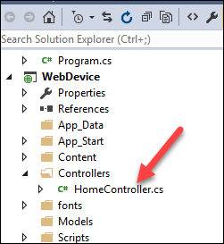
We need to create an instance of the Registry Manager class so we can add and delete devices in the IoT Hub registry. We also need to retrieve the IoT Hub connection string and URI. These will be stored in the App Settings section of the configuration section of your App Service.
Add the following lines to the top of the HomeController class.
private static RegistryManager registryManager;
private static string iotHubConnectionString = ConfigurationManager.AppSettings["iotHubConnectionString"];
private string iotHubUri = ConfigurationManager.AppSettings["iotHubUri"];
To be able to send messages to IoT Hub, a device needs to be registered. We’ll do that when the Lab1 page is displayed this means that each time you’ll load or refresh the page, a new device will be registered in IoT Hub.
Type the following to the HomeController class. The code retrieves the number of devices already registered, increase that number by 1 and add a GUID to make sure the device id is unique.
The code then tries to retrieve the device from IoT Hub in case it already exists. If not, the AddDeviceAsync method is called to create the device and it’s ID and primary key are retrieved to be displayed on the Web page.
private async Task AddDeviceAsync()
{
var deviceGuid = Guid.NewGuid();
var devices = await registryManager.GetDevicesAsync(1000);
string deviceId = "Device" + (devices.Count<Device>() + 1) + "-" + deviceGuid.ToString();
var device = await registryManager.GetDeviceAsync(deviceId);
if (device == null)
{
device = new Device(deviceId);
device = await registryManager.AddDeviceAsync(device);
}
ViewData["id"] = device.Id;
ViewData["key"] = device.Authentication.SymmetricKey.PrimaryKey;
}
Add a call to AddDeviceAsync() in Lab1 method.
public async Task<ActionResult> Lab1()
{
await AddDeviceAsync();
return View();
}
You now need to retrieve the IoT Hub connection string and add it in the App Settings section of the Web.config file.
Head to the Azure portal
Select the IoT Hub that you created in the previous steps
Click on the Shared access policies link, then iothubowner and click on the Copy button to the right of the first connection string. This will copy the connection string to the clipboard.

In Visual Studio, open the Web.config file
Enter these two App Settings keys:
iotHubConnectionString
iotHubUri
<add key="iotHubConnectionString" value=""/>
<add key="iotHubUri" value=""/>
Add their values (note that the iotHubUri value is the HostName part of the connection string). Here are some examples:
HostName=IoTHubSimulatedDevices.azure-devices.net;SharedAccessKeyName=iothubowner;SharedAccessKey=oK9DY2WPVAK4mpZ2FB+3Akq5CPULizOP/hHqNuXQiUM=
IoTHubSimulatedDevices.azure-devices.net
You should have something like this. The sections highlighted in yellow will be specific to your own configuration.
| iotHubConnectionString | HostName=IoTHubSimulatedDevices.azure-devices.net;SharedAccessKeyName=iothubowner;SharedAccessKey=oK9DY2WPVAK4mpZ2FB+3Akq5CPULizOP/hHqNuXQiUM= |
|---|---|
| iotHubUri | IoTHubSimulatedDevices.azure-devices.net |
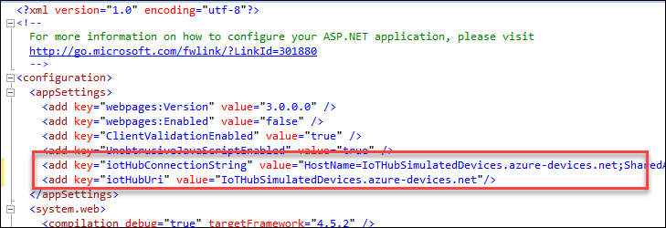
You can now launch and test the application locally. On the home page, click on the Go to Lab 1 button.
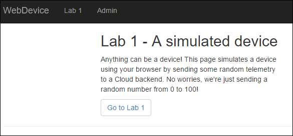
If configured correctly, you’ll see the device ID and the device key displayed on the Lab 1 page.
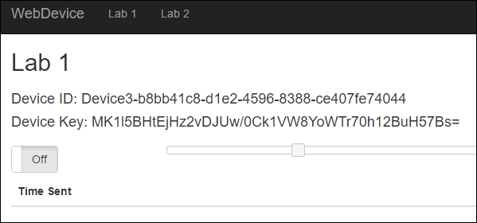
You now need to add the logic to send messages to IoT Hub. Let’s start with the server logic. Add the following code to the HomeController class in the Admin region. The SendMessage function takes 3 parameters: the device ID, the device key and the telemetry value.
A new TelemetryDataPoint object is created and serialized. Then, a DeviceClient class is created passing the device ID and key.
Finally, the SendEventAsync() method is called sending the serialized class to IoT Hub.
[HttpGet]
public async Task<ActionResult> SendMessage(string id, string key, int value)
{
var telemetryDataPoint = new
{
deviceId = id,
telemetry = value
};
var messageString = JsonConvert.SerializeObject(telemetryDataPoint);
var message = new Microsoft.Azure.Devices.Client.Message(Encoding.ASCII.GetBytes(messageString));
var deviceClient = DeviceClient.Create(iotHubUri, new DeviceAuthenticationWithRegistrySymmetricKey(id, key));
await deviceClient.SendEventAsync(message);
Response.StatusCode = 200; // OK = 200
return null;
}
Let’s now edit the Lab 1 view. Locate the Lab1.cshtml file in the Views\Home folder.

At the bottom of the file add the following JavaScript code:
<script type="text/javascript">
$(document).ready(function () {
var deviceId = "@ViewData["id"]";
var deviceKey = "@ViewData["key"]";
var repeat;
var initivalValue = Math.floor((Math.random() * 100) + 1);
$("#sliderTelemetry").slider({
max: 100,
min: 0,
orientation: "horizontal",
value: initivalValue,
slide: function (event, ui) { $('#telemetryValue').html(ui.value); }
});
$('#telemetryValue').html(initivalValue);
//Disable the Start button in case we don't have a deviceID and deviceKey
$("#onOff").prop("disabled", (deviceId == ""));
$('#onOff').change(function () {
if ($('#onOff').prop('checked')) {
repeat = setInterval(SendMessage, 2000);
}
else {
clearInterval(repeat);
}
});
function SendMessage() {
var d = new Date();
var _date = d.toLocaleDateString() + ' ' + d.toLocaleTimeString();
var _value = $("#sliderTelemetry").slider("value");
$.ajax({
url: '/Home/SendMessage/',
data: { id: deviceId, key: deviceKey, value: _value }
}).done(function () {
$('#datagrid tbody').prepend('<tr><td>' + _date + '</td><td>' + _value + '</td></tr>');
}).fail(function (jqXHR, textStatus) {
alert(textStatus);
});
}
});
</script>
The code calls the server SendMessage method every 2 seconds sending the slider value. If configured correctly, after clicking on the On/Off button, you’ll start seeing the telemetry being sent to IoT Hub.
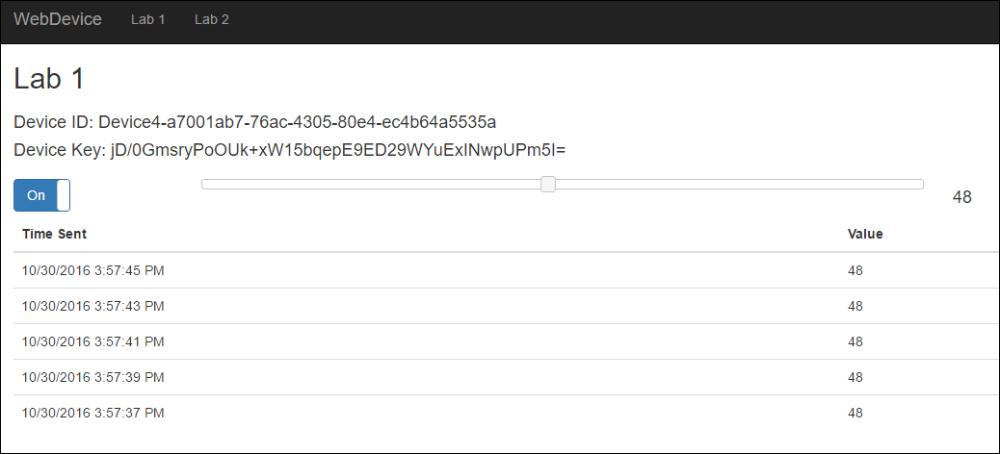
If you are short on time, you can skip this part and go to “Delete devices” below.
The Lab 1 page displays the messages sent from the Web page but that come from the JavaScript code for your simulated device, but what if you wanted to monitor the messages from all the devices? It’s possible to achieve this by monitoring the IoT Hub messages directly from code. This is what you’ll do in this section.
In Solution Explorer, notice the Console project, you’ll add code to connect to IoT Hub and output the messages in the console. Open the Program.cs file and type the following:
class Program
{
static string iotHubConnectionString = ConfigurationManager.AppSettings["iotHubConnectionString"];
static string iotHubD2cEndpoint = "messages/events";
static EventHubClient eventHubClient;
static void Main(string[] args)
{
Console.WriteLine("Receive messages. Ctrl-C to exit.\n");
eventHubClient = EventHubClient.CreateFromConnectionString(iotHubConnectionString, iotHubD2cEndpoint);
var d2cPartitions = eventHubClient.GetRuntimeInformation().PartitionIds;
CancellationTokenSource cts = new CancellationTokenSource();
System.Console.CancelKeyPress += (s, e) =>
{
e.Cancel = true;
cts.Cancel();
Console.WriteLine("Exiting...");
};
var tasks = new List<Task>();
foreach (string partition in d2cPartitions)
{
tasks.Add(ReceiveMessagesFromDeviceAsync(partition, cts.Token));
}
Task.WaitAll(tasks.ToArray());
}
private static async Task ReceiveMessagesFromDeviceAsync(string partition, CancellationToken ct)
{
var eventHubReceiver = eventHubClient.GetDefaultConsumerGroup().CreateReceiver(partition, DateTime.UtcNow);
while (true)
{
if (ct.IsCancellationRequested) break;
EventData eventData = await eventHubReceiver.ReceiveAsync();
if (eventData == null) continue;
string data = Encoding.UTF8.GetString(eventData.GetBytes());
Console.WriteLine("Message received. Partition: {0} Data: '{1}'", partition, data);
}
}
}
Next, open the App.config file and add the IoT Hub connection string to the AppSettings section. Note that you can copy it from the WebDevice project.
You need to start both console and Web projects at the same time. In the Solution Explorer, Right-Click on the solution and select Properties. Select Mutiple startup projects radio button and make sure that both projects action are set to Start.
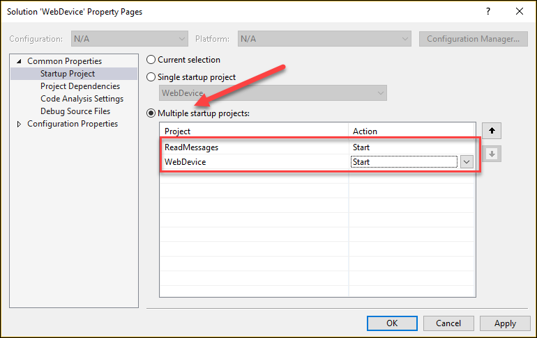
Press F5 to launch the projects and start sending telemetry from the Web page. You’ll see the messages appear in the console. If you want, copy the Web page URL and paste it in a new browser tab and start sending from multiple devices.

If you are short on time, you can skip this part and go to “Deploy the Web App to the Cloud” below.
You saw how to add new devices to the IoT Hub device registry, let’s now see how to delete them.
In the Admin region of the HomeController class, add the following code.
[HttpGet]
public async Task<ActionResult> DeleteAllDevices()
{
await DeleteAllDevicesAsync();
Response.StatusCode = 200; // OK = 200
return null;
}
private async Task DeleteAllDevicesAsync()
{
var devices = await registryManager.GetDevicesAsync(1000);
if (devices.Count<Device>() > 0)
await registryManager.RemoveDevices2Async(devices);
}
Let’s now add the client side code. In Solution Explorer, locate and open the Admin.cshtml page.
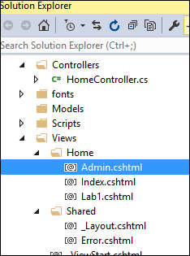
Add the following JavaScript code at the bottom of the page. The code simply calls the DeleteAllDevices server method.
<script type="text/javascript">
$(document).ready(function () {
$("#btnDeleteAllDevices").click(function () {
$.ajax({
url: '/Home/DeleteAllDevices/'
}).done(function () {
alert('All devices are deleted');
}).fail(function (jqXHR, textStatus) {
alert('Something went wrong');
});
});
});
</script>
Clicking the Admin link on the top menu bar will display the Admin page. Simply click on the Delete all devices button to delete all the registered devices.
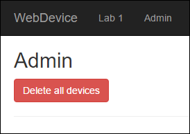
In Visual Studio, Right-Click on the WebDevice project and select Publish

Select Microsoft Azure App Service

Select your account and subscription and click on the New… button.
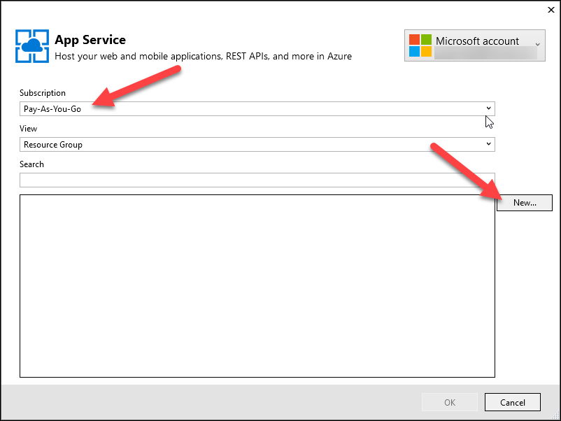
Enter a Web App Name, click on Change Type and select Web App. The name needs to be globally unique.
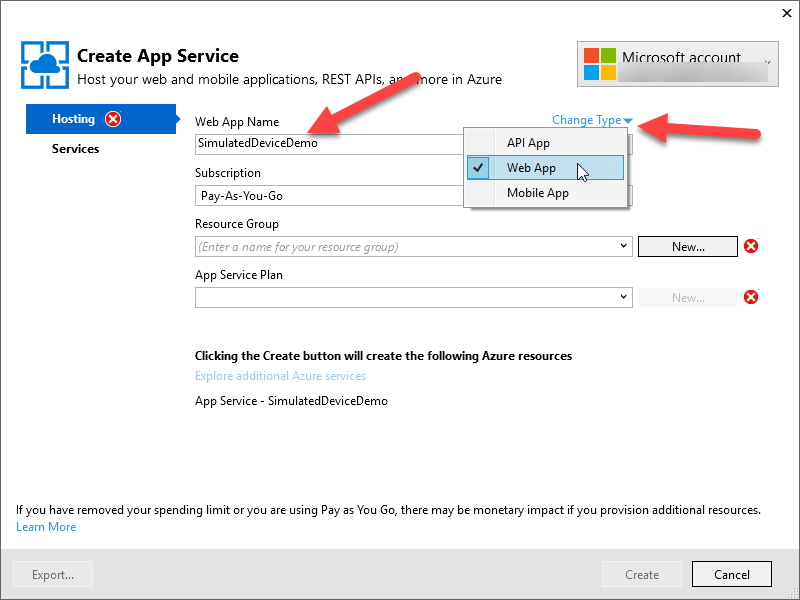
Enter a Resource Group name (you can use the same name you use for the Web App) and click on the New.. button to create a new App Service Plan.

Select a data center location that is near you and the size of the plan. You can use the Free tier but B1 is highly recommended since the free tier has limited resources and is recycled at regular intervals. You can prep using the free tier, then scale to B1 right before the demo if you want.

Next, click the Create button to create the App Service. This will take a few seconds.
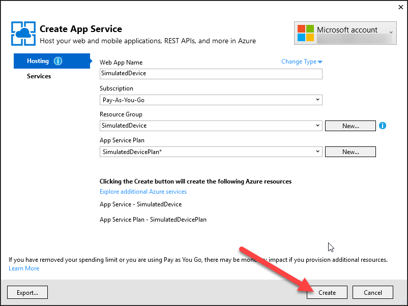
You can now publish the demo app to Azure by clicking on the Publish button.
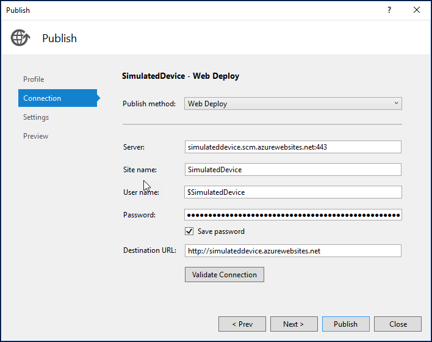
Visual Studio will package the Web app and deploy it. This will take a minute or two.
Once deployed, Visual Studio will display a message saying that the app was published successfully and a browser will launch.
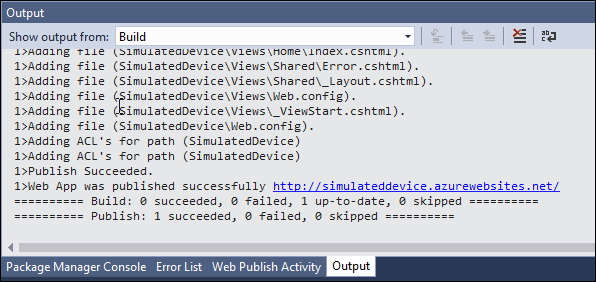
This ends the manual deployment.
Once you have deployed the Web app and created an IoT Hub, you need to configure the Web App with the IoT Hub connection string.
Select the IoT Hub that you created in the previous steps
Click on the Shared access policies link, then iothubowner and click on the Copy button to the right of the first connection string. This will copy the connection string to the clipboard.
Locate the Web app by clicking on the App Services link in the left side menu and click on the service name.

Click the Application Settings link in the Settings section.
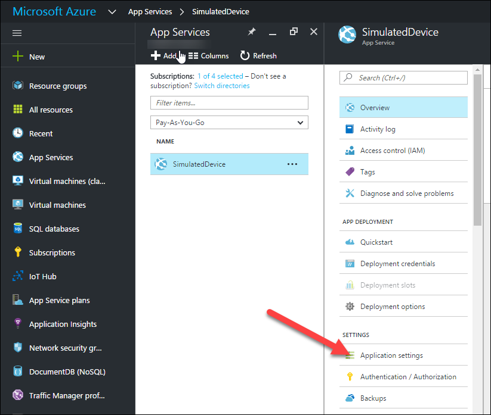
Scroll down a little bit and locate the App settings section.
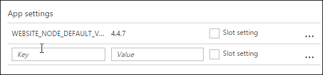
Enter these two keys:
iotHubConnectionString
iotHubUri
And their values (note that the iotHubUri value is the HostName part of the connection string). Here are some examples:
HostName=IoTHubSimulatedDevices.azure-devices.net;SharedAccessKeyName=iothubowner;SharedAccessKey=oK9DY2WPVAK4mpZ2FB+3Akq5CPULizOP/hHqNuXQiUM=
IoTHubSimulatedDevices.azure-devices.net
You should have something like this. The sections highlighted in yellow will be specific to your own configuration.
| iotHubConnectionString | HostName=IoTHubSimulatedDevices.azure-devices.net;SharedAccessKeyName=iothubowner;SharedAccessKey=oK9DY2WPVAK4mpZ2FB+3Akq5CPULizOP/hHqNuXQiUM= |
|---|---|
| iotHubUri | IoTHubSimulatedDevices.azure-devices.net |
Click on Save.

The app settings are now set.
It’s now time to do a little test to make sure that everything you’ve configured so far does work. Remember what you have configured: a Web site that will send messages to an IoT Hub instance and a Stream Analytics job that will query the IoT Hub in real time and ultimately provide the results to Power BI (in a step coming up).
Do you remember the URL for the Web app you deployed? No? No worries! Click on the portal hamburger menu and click on App Services.

Click the name of your Web app and you’ll find the URL in the tile on the right. Click the URL.

A browser will launch displaying the site’s home page. Note the URL because you’ll direct the attendees to this page.
Click on the Go to Lab 1 button.
A unique device ID is created each time this page is loaded. Displayed is its unique name and the key unique to that device. The ID and the key are used by IoT Hub.
You’ll see a slider where you can set values from 0 to 100.
The On/Off button is used to start/stop the sending or not of the fake telemetry to the backend. A message is sent every 2 seconds.
Click on the On/Off button and move the slider. You’ll start seeing values displayed in a table, with the newest one at the top.

Let’s now confirm that IoT Hub did receive the messages we sent. Head back to your IoT Hub tile in the Azure Portal. In the Usage section, you will see that you have one device registered and the number of messages received. Click on the Devices button. This will open the Device Explorer tile and you’ll see the device that was registered by launching the Demo 1 page.

Awesome! Now let’s configure a report in Power BI.
The last step to prepare this demo is to configure a report in Power BI.
Head to www.powerbi.com
You should see a new dataset with the name you typed earlier in the Stream Analytics output configuration. Click on the dataset name.

To the right of the screen, you’ll see the table name and the fields names along with a series of visualizations or chart types. Select the Card visualization and check the deviceid checkbox.
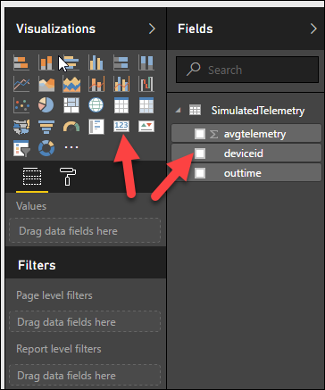
We want to display the number of devices so let’s change the count to a distinct count by selecting Count (Distinct) in the Fields section for our deviceid field.
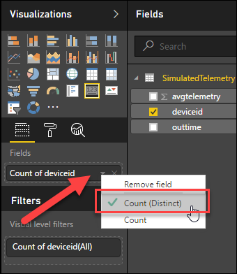
The count is displayed in the card.
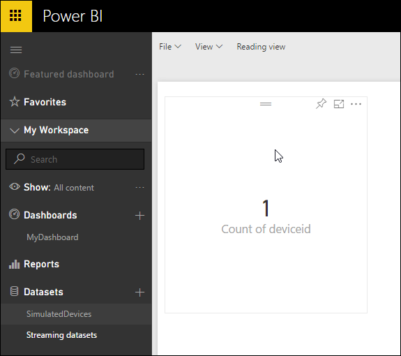
Let’s now create a line chart to display the average telemetry for all devices over time.
Click on the Line visualization, select the avgtelemetry and outtime fields. Make sure that outtime is in the Axis section (you can drag&drop it if needed) and that avgtelemetry is in the Values section. Select Average from the dropdown menu to average the avgtelemetry field.
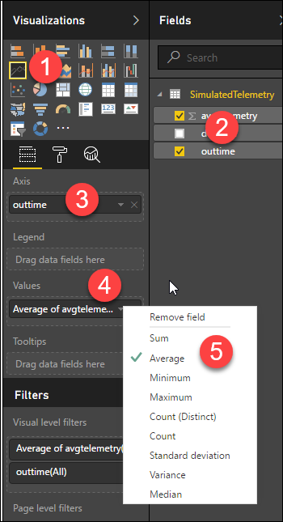
You should have something like this:

Let’s display these two reports in a new dashboard.
Click the pin button on each graph.
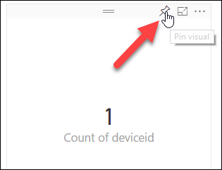
Power BI will prompt you for a report name.

Next, Power BI will ask you if you want to pin the report in a new or existing dashboard. Select New and enter a name.

Notice that the new dashboard appears in the Dashboard section. Select it.

Congratulations! You just built your first Power BI.

In the Azure portal, locate the resource group that you used to group the Azure services that you used for the demo.
Click on the hamburger menu and select Resource group.
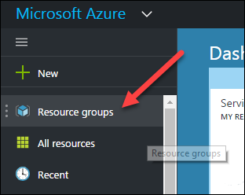
Select the group from the list
Click on the Delete button
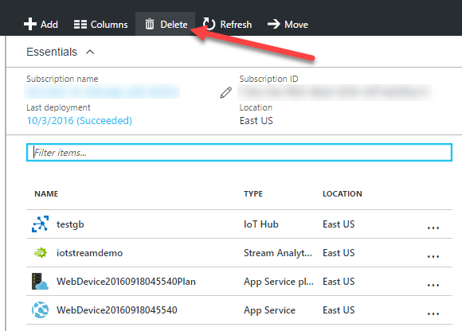
This will delete all the resources that you used for the lab if you placed them in the same resource group of course.